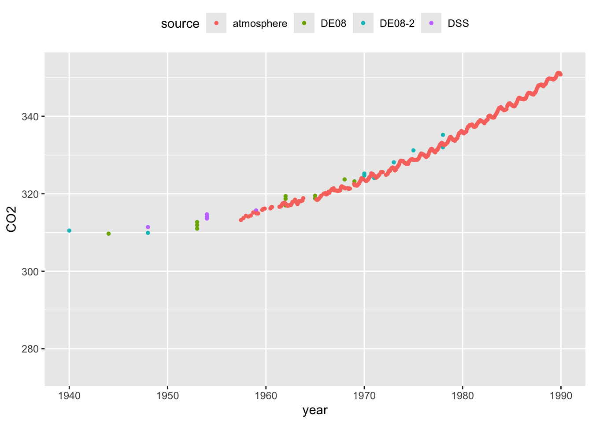
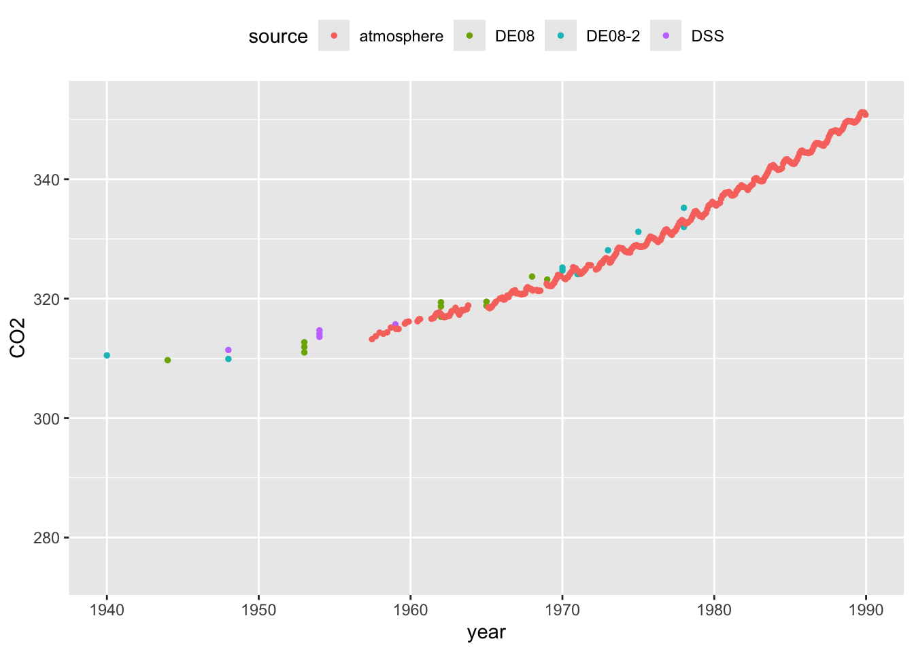

1 Where do data come from?
Data can take many forms. Sometimes we are dealing with simple numbers, such as blood pressure measurements or age. Some data may consist of categories, such as country of origin or presence/absence of a characteristic of interest. Modern data can be much more sophisticated, arising in the form of images, temperature curves, three-dimensional surfaces or networks. This chapter focuses on relatively simple data forms but uses these to discuss some important principles of how data are collected and what they are able to tell us.
1.1 Some examples of data
1.1.1 CO2 and global warming
One of the world’s most pressing issue is climate change as a result of global warming. The levels of CO2 in the atmosphere are clearly implicated in this as a result of the ‘greenhouse’ effect. Accurate monitoring of CO2 began in the late 1950’s through the pioneering work of Charles David Keeling at Mauna Loa Observatory in Hawaii and measurements have been made continuously since then, providing an invaluable record of change. This ‘time series’ is displayed at monthly resolution in the left hand panel below.


This time series makes it clear that there has been a steady rise in atmospheric CO2 over the entire period of monitoring. The implications of this become startling when we compare the series to data which indicate the levels of CO2 which correspond to earlier historical times. This can be done by measuring the CO2 content of air trapped in ice cores. Careful analysis of the ice layers allow the identification of the time scale, which stretches back over hundreds of thousands of years. The CO2 measurements from ice cores has been superimposed on the plot of the Mauna Loa data in the right hand panel above. This makes it clear that the modern measurements of CO2 are ‘off the scale’ of the historical levels.
In order to assuage any concerns about the comparability between the modern atmospheric and historical ice core CO2 measurements, the plots below focus on the period where these overlap. The left hand plot highlights the sudden dramatic rise in CO2 as the industrial revolution gathered pace. The right hand panel zooms in on the years when both types of measurement are available, indicating the very strong level of agreement between the two.
We will look at corresponding temperature changes later, but these data already paint a stark picture of the nature and size of the challenge we face in addressing climate change. The Intergovernmental Panel on Climate Change synthesises our scientific understanding of the process and continues to report on the current situation, with urgent calls to action.
 

This example highlights that, in some settings, there is a need for an appropriate control to enable informative comparisons. Controls can sometimes be difficult to identify. In this case, considerable effort has been undertaken to ensure the validity of comparisons with the control data. The example also highlights the relevance of our scientific understanding of the context in which the experiment takes place. The physics of greenhouse gasses is well understood and this allows us to strengthen the interpretation of what we see in the data.
1.1.2 The first tuberculosis trial
One of the very earliest systematic evaluations of medical treatment, marking a significant step in what we now term ‘clinical trials’, was a study on the effects of Streptomycin on pulmonary tuberculosis by Marshall et al. (1948).
The statistician Austin Bradford Hill, whose picture is below, introduced very important methodology in this study. In his review of the development of clinical trials, Bhatt (2010) writes “This trial was a model of meticulousness in design and implementation, with systematic enrolment criteria and data collection compared with the ad hoc nature of other contemporary research. A key advantage of Dr Hill’s randomization scheme over alternation procedure was “allocation concealment” at the time patients were enrolled in the trial. Another significant feature of the trial was the use of objective measures such as interpretation of x-rays by experts who were blinded to the patient’s treatment assignment.”

Figure 1.1: Sir Austin Bradford Hill, Wellcome Collection, CC BY.
The headline results reported in the scientific paper are shown in the table below.
| Radiological assessment | Streptomycin group | Control group |
|---|---|---|
| Considerable improvement | 28 | 4 |
| Moderate or slight improvement | 10 | 13 |
| No material change | 2 | 3 |
| Moderate or slight deterioration | 5 | 12 |
| Considerable deterioration | 6 | 6 |
| Deaths | 4 | 14 |
| Total | 55 | 52 |
The beneficial effects of the treatment are clear and we can have confidence in the conclusion because of the careful conduct of the trial. Key features of the design include the presence of a control group and the use of randomisation.
1.1.3 The birds and the bees: how to tell the sex of a herring gull
Herring gulls are found across the coastal regions of North-Western Europe. When studying the behaviour of these birds, it is useful to be able to identify sex. With this species, this is not possible by visual examination of the obvious anatomical features as the appropriate organs are internal. It would therefore be very useful to be able to identify the sex of a bird by taking simple measurements of some kind, on the assumption that the sexes are lijkely to differn in size, as happens with many animal species. The correct identification of the sex of a herring gull has to be carried out by dissection. The most suitable source of data for this purpose is therefore birds which have been found dead or have been culled for other reasons. Measurements from a sample of 100 male and 100 female birds, kindly provided by Prof. Pat Monaghan from thte University of Glasgow, are available for investigation.

Length measurements, based on the distance between two of the yellow landmarks in the picture above, could be useful in distinguishing between the sexes. as males and females tend to have different sizes in many species. There is an interactive application in R which can help in thinking this through. A gentle introduction to R is provided in Chapter 2 but, if you have followed the guidance at the start of the book on installing R and the add-on package rpanel, then type in the following instructions into the console window to launch the app.
Consider which pairs of landmarks might provide a suitable length measurement. Suitable criteria are:
- reproducible, by yourself and others;
- valid, in what they aim to measure;
- informative, as they are likely to be different for male and females;
- well calibrated, as they target a feature of interest;
- practical, as measurements can be made reasonably easily.
Click on your selected pairs of landmarks and some feedback will be given. If you are able to identify some suitable measurements, checkboxes and buttons will appear to allow you to see some plots of the data, separated out by sex.
1.1.4 Tracking the covid pandemic
When the covid19 pandemic began there was immediate and urgent effort to track its progress. That happened in many ways, most immediately in the numbers of deaths and hospital admissions. In the UK, when tests became available, the number of positive results was also regularly reported. The symptoms data collected by the app from the ZOE Health Study provided another source of information.
Although these sources provided useful information, the most reliable estimates of covid infection levels came from a large survey conducted by the Office of National Statistics (ONS), in partnership with the University of Oxford, the University of Manchester, the UK Health Security Agency (UKHSA) and the Wellcome Trust. Swab and blood samples were provided by thousands of people from across the UK who had been selected and random and who had agreed to participate by providing repeated samples over an extended time period. Statistical modeling was also undertaken to ensure that the results represented the population as a whole.
The ONS provided extensive information about the data, including details of the methods and study design. Scientific publication of the methods appeared in a Lancet paper. This is an example where very considerable effort was made to ensure that what we observe is an accurate representation of what is happening.
The plot above uses the survey data to track the pandemic in terms of the percentage of people in the UK who tested positive. The virulence of the infection changed over time so deaths and hospital admissions show rather different patterns. We will look at data on those later.
An account of the covid-19 tracking project is given in an article published by the Royal Statistical Society in its Statistics Under Pressure series. The hugely valuable nature of the information provided by the ONS survey is discussed in a Conversation article.
1.1.5 More complex data objects
The examples above mostly involve measurements of a single quantity of interest, such as CO\(_2\), the level of health improvement or the proportion of people with covid19. The herring gulls example might involve several different measurements on each bird. However, data can be much more complex. Some examples are:
- high-resolution images captured from a video camera monitoring wildlife movement;
- free-form text entered into the search box of a web browser;
- an extensive set of responses recorded from an individual in a survey, including later questions which are conditional on the responses to earlier questions;
- a network describing the interactions of one individual with others in a group;
- the life history of a hospital patient.
As the complexity of data increases, so the models required for analysis may also need to increase in sophistication. Nonetheless, some basic principles and concepts still apply and it is the aim of this book to discuss these. While the focus is on relatively straightforward types of data, the ideas will provide helpful building blocks for more complex situations.
1.2 Some broad issues
It is worthwhile reflecting on some of the broad issues which have already arisen in our review of these examples of data. To structure our reflections it will be helpful to recall the PPDAC framework discussed in the Preface, displayed below in graphical form. In this section we will focus on the Problem, Plan and Data stages.

1.2.1 What’s the problem?
It is very important to define the objectives of an experiment clearly. Failure to do this will make subsequent analysis and interpretation very difficult. Pilot studies are a perfectly valid preliminary step but a clear objective is still needed. ‘Fishing expeditions’ are of rather limited use.
Our objectives will be informed by previous work so a review of the scientific literature is a wise start. Scientific knowledge of the subject domain will be very helpful not only in deciding what problem to tackle but also in informing later decisions in the planning process and in due course in interpreting the results of our analysis.
There are some general aspects of this process which are worth highlighting. The first is the distinction between an observational study where we simply observe and record variables of interest. We do not intervene or influence the situation in any way other by recording what we see. In an observational study we can only identify association between variables. A simple of example is the association between social or economic characteristics and political voting patterns.
In contrast, a designed experiment involves the specification of `treatments’ which are assigned by the experimenter. Rather than simply observe, we intervene. We are then interested in the way the treatments affect the outcome. If a designed experiment is conducted well it allows us to identify causal relationships between variables. A simple example is a clinical trial, such as the tuberculosis trial described in Section 1.1, where we compare the effects of different treatments on the recovery of patients suffering from a particular medical condition.
A second general issue is whether our aim is to understand the processes at work in our scientific context or whether we simply want to predict an outcome or design a system which will classify future observations into different groups. The classification of herring gulls into male and female groups discussed in Section 1.1 is an example of the latter. This is a case where we may not be primarily interested in which variables are involved in our model, simply in how successful our model is in prediction or classification. This may change our attitude to building a model, when the time comes, but it is also helpful to be aware of the distinction between these two aims from the start of the planning process.
1.2.2 What’s the plan?
Acquiring data which are appropriate, informative and unbiase requires careful thought. The ONS covid-19 survey was described in Section @ref{where-data). Take a look at the methodology guide for this survey. It is very extensive, covering all the major issues which had to be considered.
One of the exercises at the end of this chapter ask you to consider how you might design a simple experiment to investigate the operation of short term memory, known to psychologists as “working memory”. How is a list of items recalled from memory? This is an experiment which can be caried out in a classroom or small group setting. It might surprise you just how extensive the list of detailed arrangements needs to be.
One of the important tasks is to identify which measurements should be taken. The list should include not only those which are mentioned in the definition of the problem being tackled but also those which we know or suspect from previous work or our scientific understanding are likely to influence the process we are studying. This will help us to consider an appropriate experimental design - a topic we will revisit in a later chapter.
1.2.3 Where do the data come from?
The diagram at the start of this section includes two headings, “Real world” and “Model world”. The question our experiment aims to tackle is about what is going on “out there in the wild”, even when the “wild” refers to a laboratory setting. If we consider all the observations we might ever make then we can view this as the population we are studying. The process of collecting a particular dataset then delivers a sample. Our modelling process will use this sample to try to understand what is going on in the population. It is then crucially important to obtain a sample which properly represents the population and does not suffer from serious bias. If we make serious mistakes at this stage, it is unlikely that we will be able to retrieve the situation.
A good mechanism for avoiding bias is to use randomisation. This applies in two ways. The first is to the process of identifying which items from the population are recruited into our sample, ideally ensuring that all potential items have an equal chance of appearing. The second applies to the allocation of any treatments to sampled items. The tuberculosis trial outlined in Section 1.1 is one of the first occasions where this was used. It is now a standard component of clinical trials worldwide.
1.2.4 Who do you trust?
We live in a world where ‘fake news’ has become a commonly used term. Not everyone is careful in the way data are collected, analysed and interpreted. Sadly, data are sometimes used selectively to support a conclusion already adopted. It is very important that this is countered and that the analysis of data is conducted in an honest and professional manner.
The UK Statistics Authority is the body which oversees the production of official statistics in the UK. Its code of practice is based on the principles of:
- trustworthiness, confidence in the people and organisations that produce statistics and data;
- quality, data and methods that produce assured statistics;
- value, statistics that support society’s needs for information.
The full code is well worth reading. Although it is couched in terms of official statistics, providing information for the public and for government, the principles it describes are very important. A Declaration on Professional Ethics is also provided by the International Statistical Institute.
In addition to the obligation on all who collect and analyse data to act with professionalism and integrity, specific ethical considerations arise in the planning and design of experiments, particularly those involving humans. Indeed, the protocol for any experiment involving humans must be approved by an appropriate ethical committee before it can be put into practice. A simple example is in a clinical trial to compare two treatments where the size of the sample must be considered very carefully. The sample must be large enough to enable a clear conclusion about the treatments to be reached, but if it is too large then some patients may end up being given a treatment which might clearly have been shown by a smaller trial to be inferior. That would not be ethical.
We will often find ourselves using data from other sources as part of our investigations. Indeed, many different sources are used in this book. The issue of trustworthiness, raised in the UK Statistics Authority code of conduct, again arises. What sources can we trust as reliable?
Some guidance comes from the source organisations stated aims and code of conduct. Reputation also matters. Open documentation is important, so that the details of the data collection process can be reviewed. Accountability matters too, so that there is a mechanism for query and complaint if the need arises.
The RSS has provided a document, Sound or suspicious? Ten tips to be statistically savvy which offers advice on how to assess claims that are made.
1.3 What could possibly go wrong?
It is very instructive to think about studies which went wrong.
1.3.1 US presidential elections, 1936 and 1948
The Literary Digest was a magazine which surveyed 10 million people, beginning with its own readers, who they planned to vote for in the 1936 US presidential election. A massive 2.4 million people responded, leading to the prediction of a clear win for the candidate Alf Landon. In fact, Franklin Delano Roosevelt had a landslide victory. What went wrong?
For another occasion when things went wrong in the prediction of the outcome of a US presidential election, see the article in the Los Angeles Times about the 1948 election.
1.4 Further reading
The CEDA Archive, maintained by the National Environmental Reseaerch Council (NERC) in the UK, contains a very large collection of environmental data from atmospheric and earth observation research.
If data are to be collected through a survey, the nature and construction of the questions are very important, to avoid bias or leading the respondent. The Pew Research Centre, a high profile independent organisation, provides a helpful discussion of writing survey questions.
Copernicus: European environmental data. https://surfobs.climate.copernicus.eu/dataaccess/index.php
Diggle and Chetwynd (2011)
Rosling (2018)
The Tiger That Isn’t. Andrew Dilnot & Michael Blastland.
How to lie with Statistics. Darrell Huff.
Damned Lies and Statistics. Joel BEst.
More Damned Lies and Statistics. Joel Best.
Innumeracy. John Allen Paulos.
Reckoning with Risk. Gerd Gegerenzer. (Some people object to technical errors?)
Dicing with Death. Stephen Senn.
Risk. John Adams.
Britain in Numbers. Simon Briscoe.
Why Do Buses Come in Threes. Rob Eastaway.
How Long is a Piece of String. Rob Eastaway.
How to Take a Penalty. Rob Eastaway.
1.5 Exercises
1.5.1 An investigation of short-term memory
Consider how you might design a simple experiment to investigate the operation of short term memory, known to psychologists as “working memory”? How is a list of items recalled from memory? This is an experiment which can be caried out in a classroom or small group setting. It might surprise you just how extensive the list of detailed arrangements needs to be.
Once you have spent some time considering this, you may like tyo consult Bowman (1994) which describes some of the issues which arose in a classroom setting.
1.5.2 A survey of dental health
Imagine you have been commissioned to conduct a survey of the dental health of five year old children in England. Write down some of the things on which you will need to make decisions and sketch out some possible answers. This should include how a suitable sample of children will be selected, what measurements will be made, how this will be done, and another other issues which you think are relevant.
In fact, a survey of exactly this type is regularly conducted under the National Dental Epidemiology Programme (NDEP) for England. Once you have spent some time considering the issues, you can see the detail of what was done in the documents available here for the 2016-2017 survey. The protocol document describes the planning of the survey in considerable detail. The results of a further survey in 2022, using the same protocol, are also available.
1.5.3 Hearings aid and dementia
A Lancet paper studied the association between hearing loss and dementia, in particular examining the role of hearing aids. The interpretation of the findings were:
In people with hearing loss, hearing aid use is associated with a risk of dementia of a similar level to that of people without hearing loss. With the postulation that up to 8% of dementia cases could be prevented with proper hearing loss management, our findings highlight the urgent need to take measures to address hearing loss to improve cognitive decline.
Are there other possible interpretations? You may wish to look at this article published by the British Geriatrics Society which discusses the issue. The article also provides a link to a further scientific paper for the technical detail.